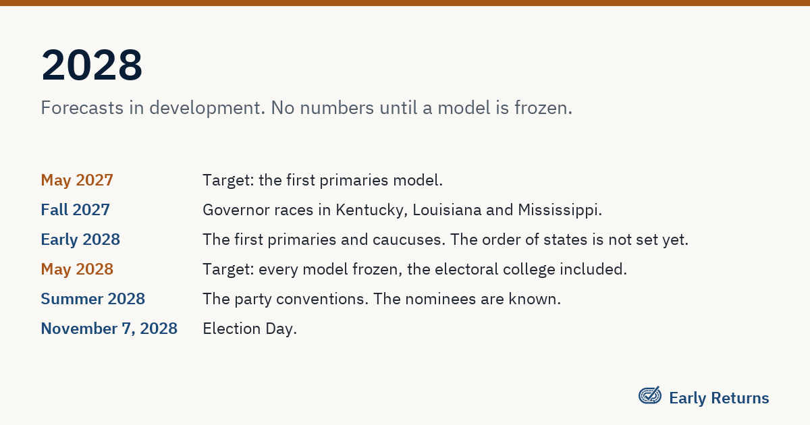

2028
The 2028 presidential election, with the House, Senate and governor races on the same ballot, and the primaries before it.

Nothing here is a forecast yet. Each model is designed first, tested on past elections, and then frozen; its numbers appear only after that.
What is being built
Primaries
The 2028 nomination contests in both parties.
First version by May 2027
Electoral college
A presidential forecast by state, simulated through to electoral votes.
Frozen by May 2028
House and Senate
The 2026 models, carried to 2028 with the changes that pass their tests.
Frozen by May 2028
Governors
The 2027 and 2028 governor races, tested on 2026.
Frozen by May 2028
Special elections
A single House or Senate special election, whenever one is called.
No fixed date
Key dates
- Through 2027Special elections, as they are called.
- May 2027Target: the first primaries model.
- Fall 2027Governor races in Kentucky, Louisiana and Mississippi.
- Early 2028The first primaries and caucuses. The order of states is not set yet.
- May 2028Target: every model frozen, the electoral college included.
- Summer 2028The party conventions. The nominees are known.
- November 7, 2028Election Day.
Targets are this site's own, not fixed dates. Dates are added as they become known.